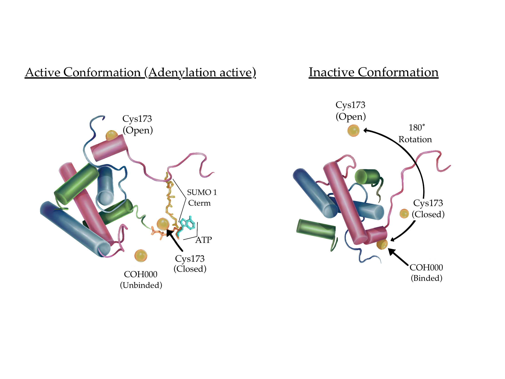

Visual Artist, designer, and content creator exploring personal and cultural roots through means of painting, design, and digital art.

I am a Mexican-American visual artist and designer whose practice is rooted in the intersection of art and science. With a background in Human biology, I draw on this foundation to create work that bridges both disciplines—particularly through scientific illustration and detailed visual storytelling. My goal is to make complex scientific concepts more accessible and visually engaging, while also celebrating the beauty of observation and inquiry.
My work is deeply personal, often exploring themes of identity, memory, and cultural heritage. I use realism—especially through self-portraiture—as a tool for reflection and connection.
This approach allows me to explore my own narrative while resonating with broader cultural experiences. Primarily working in oils and graphite, I am known for my lifelike self-portraits and precise technique. Alongside traditional media, I also create digital work using tools such as Procreate, Adobe Illustrator, and Photoshop, adapting to diverse platforms and audiences. My art has been showcased in exhibitions, across social media, and through various creative projects and collaborations.
As a multidisciplinary artist, I aim to continue exploring how scientific precision and emotional depth can coexist, offering visually compelling work that speaks across boundaries—be they disciplinary or cultural.
Figure 2 from Hariprasad, M., & Techawatanasuk, P. (2023-2024). "Hijacked: How Cancer Comes to Life." Saltman Quarterly Undergraduate Research Magazine, Under The Scope Vol. 14, 12-17. Illustration by Amber Urena. Used with permission from the publisher.
Figure 3 from Hariprasad, M., & Techawatanasuk, P. (2023-2024). "Hijacked: How Cancer Comes to Life." Saltman Quarterly Undergraduate Research Magazine, Under The Scope Vol. 14, 12-17. Illustration by Amber Urena. Used with permission from the publisher.
Figure from Dhanala, S (2024). "Biological and Chronological Age: Why They Might Be Different" Saltman Quarterly Undergraduate Research Magazine, Online Journal. Illustration by Amber Urena. Used with permission from the publisher.
Figure from Vidisha, M (2023). "Jaw Dropping Effects of Mouth Breathing" Saltman Quarterly Undergraduate Research Magazine, Online Journal. Illustration by Amber Urena. Used with permission from the publisher.
"Ni de Aqui, Ni de Alla" Oil on Canvas | 2025

"Title" Oil on Canvas | 2025
"Hasta La Raiz" Oil on Canvas | 2025
"Las Olas" Oil on Canvas | 2024
"Recuerdos" Mixed Media on Canvas | 2024

"Muscle Memory" Oil on Canvas | 2022
"Sacrificio" Graphite | 2024

"2020" Colored Pencil | 2022
johndoe@gmail.com
(123)456-7890
Instagram: @johndoe